1 Motivation
Theme: Out of Place
Our inspiration comes from the anime movie Big Fish & Begonia based on the story of K'un, a huge fish flying in the universe, from an ancient Chinese literature A Happy Excursion.
 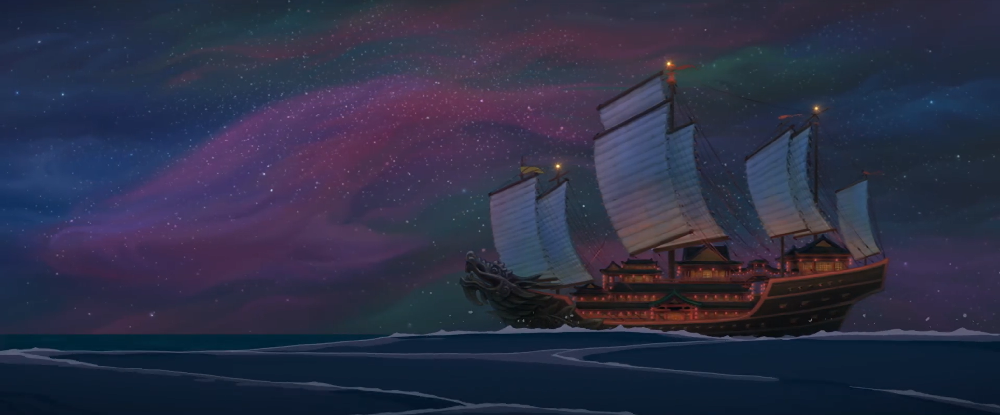
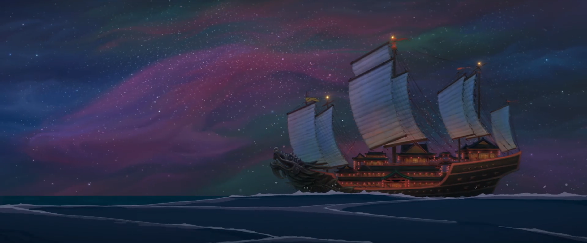
We want to build an imaginary scene about a sky boat sailing to explore the mysterious fields where K'un appears. In accordance to the theme of this rendering competition--“out of place”, instead of the ocean, our boat will be sailing across the clouds and surrounded by a background full of galaxy, from afar. In the center of the background lies a huge moon.
2 Boxiang's Implementation
Feature List:
- images as textures (No 5.3)
- Procedural volumes (No 5.5)
- Modeling meshes (No 5.20)
- Textured Area Emitters (No 5.11)
- Low Discrepancy Sampling (should work beyond sampling on the image plane)(No 10.5)
- Environment Map Emitter (No 15.3)
- Disney BSDF (No 15.5) Parameters to be graded: "subsurface, specular, roughness, metallic, clearcoat"
1. Images as Textures - 5pts
Outside Dependencies: ./include/nori/lodepng.h ./src/lodepng.cpp
Modified files: ./src/imagetexture.cpp ./include/nori/emitter.h
We have all of our texture images stored in the ./textrues folder. When initializing a texture object,
we first use lodepng to load image.
Then, in eval(), we project the input uv coordinates onto the image and find out corresponding value. Meanwhile, I added "x_offset, y_offset" to move textrue image around, and a "scale" parameter to scale texture size.
Validations:
-
Compare model with and without textrue mapping
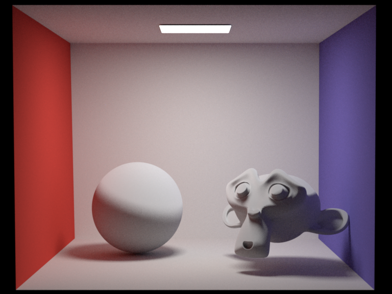 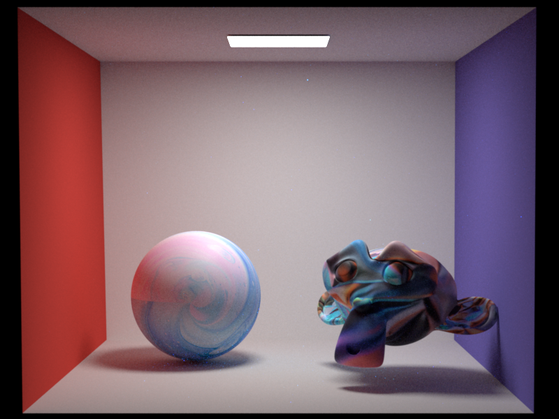 -
Tune parameters on sphere: We increase the x_offset and y_offset by 0.5 respectively (image in the middle and right), and compare with the default setting (image in the left).
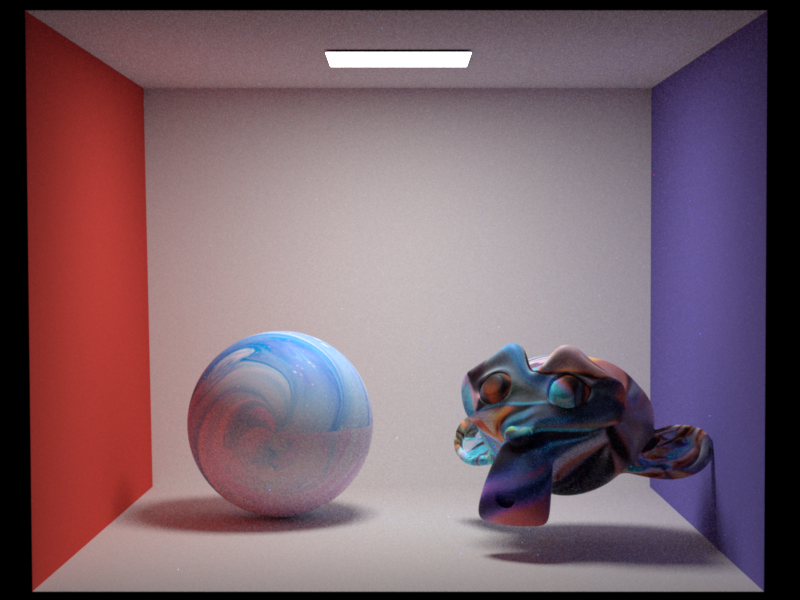 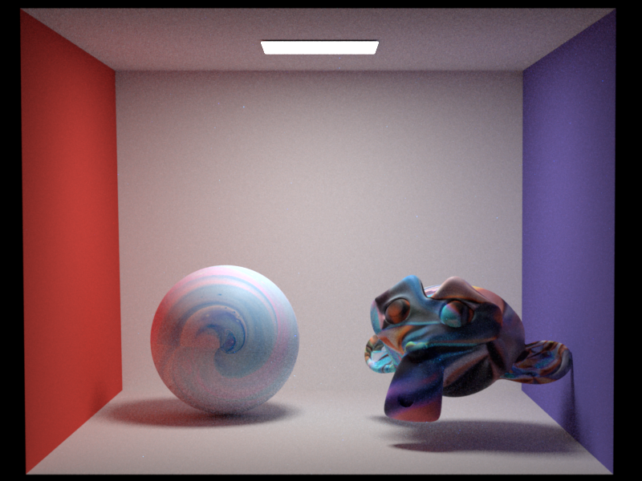 -
Compare texture before and after scaling by 0.5
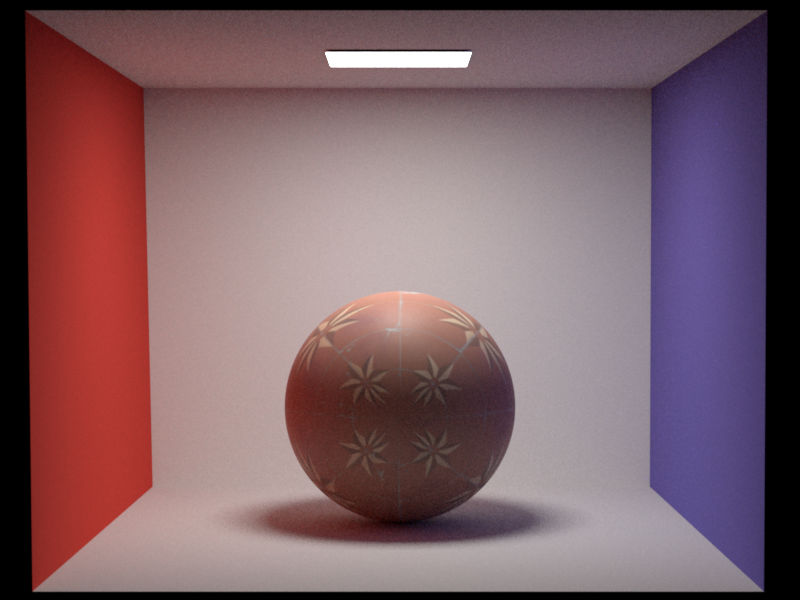 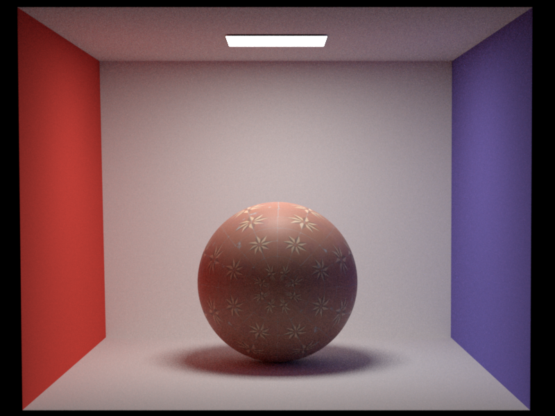
2. Procedural volumes - 5pts
Modified files: ./src/noise.cpp ./include/nori/grid.h ./include/nori/noise.h
We build a three-dimensional perlin noise to generate procedural volumes. With heterogeneous volume divided into solid grids, for any interested point in the space, we can find the unique grid cell in which the point lies.
Then, we generate a random vector for each vertex. The dot product between this random vector and vector from vertex to interested point is used to weight each vertex. Then, apply a smooth function NoiseWeight to ensure the 1st and 2nd derivative continuity of noise function. Finally, we implement a three dimensional interpolation among the eight weights to get the noise value.
We use clamp to rescale the noise value within (0,1), which in turn adjusts the Homogeneous density.
Validations:
Compare the Homogeneous sphere before and after applying perlin noise.
3. Modeling meshes - 5pts
In our final scene, we use a lot of cloud models, which are usually versatile. It's hard to find available models online to fit in our scene perfectly. Therefore, I use blender to build all the cloud meshes. Special acknowledgement to the Blender tutorial on Youtube.
-
Overview of all clouds in final scene:
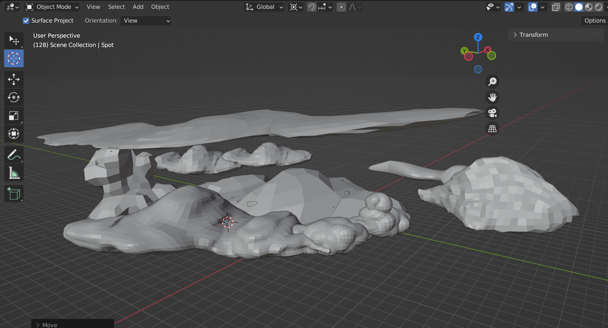 -
Detailed comparison between: mesh prototype in blender, rendered result in blender and our renderer.
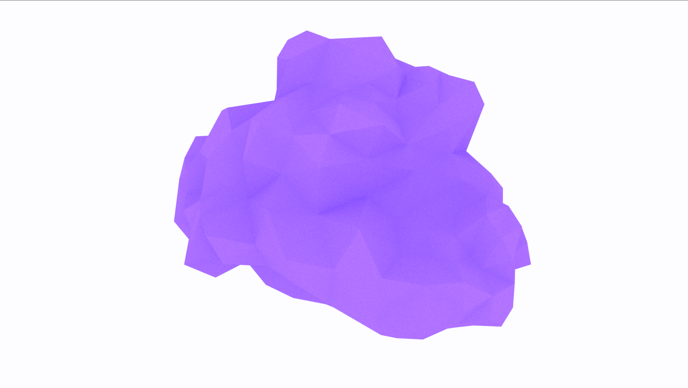 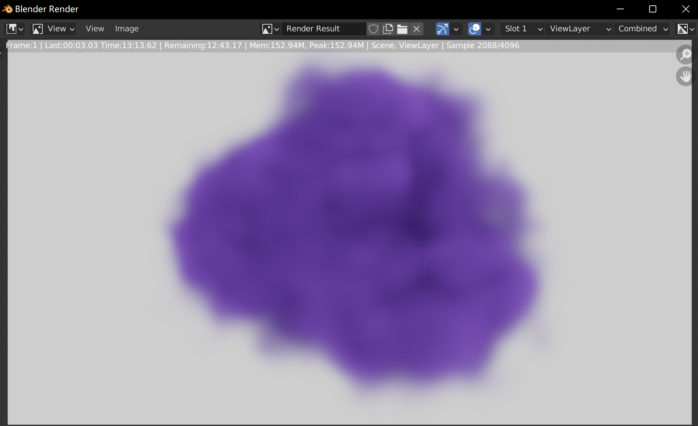 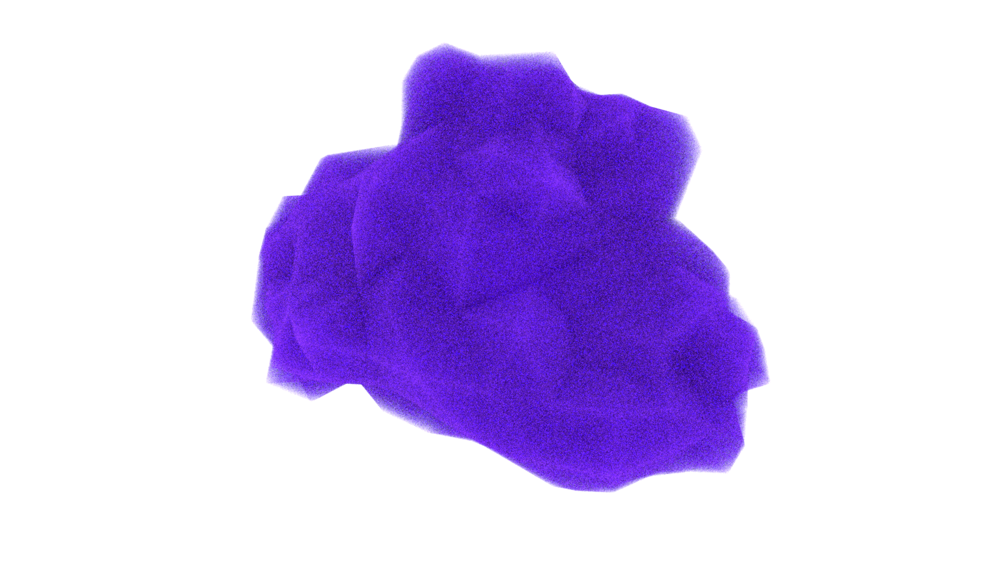
4. Textured Area Emitters - 5pts
Modified files: ./src/arealight.cpp ./include/nori/emitter.h./src/imagetexture.cpp
In arealight, we use addChild to construct the textrue instance. Then, we can use the same method as "Image as Texture" to search for color with uv mapping.
Once find a texture color, the origional radiance value will be used to scale the intensity of emitted light.
Validations:
Compare two emitter texture with different radiance:
5. Low Discrepancy Sampling - 10pts
Modified files: ./src/lowdiscrepancy.cpp ./src/render.cpp ./include/nori/sampler.h
The low_discrepancy sampling here is mainly based on the Quasi-Monte Carlo sequence. To make even distribution easier, we first round the sampleCount to be a perfect square.
Before sampling, we initialize 2D-array of size [maxDimension,sampleCount] to store QMC sequence, which will be generated on the fly while rendering.
Everytime when we start to sample a new pixel, we call generate() to compute a maxDimension long of QMC sequence, and make sampleIndex and dimension zero.
Everytime we generate a new sample, we call advance(), which add sampleIndex by one, and make dimension zero. In next1D()next2D(),with sampleIndex and dimension, we search for the random number that we generated in advance, and increase dimension before return.
Once the dimensions are used up, we turn back to pcg32 instance, which generates random values instantly without any preprocess, but is not low-discrepancy.
Validations:
Compare my low_discrepancy image with nori independent method, mitsuba independent and ld-sampler. For all four scenes, I use spp=16.
And it's obvious that my ld_sampler has less noise to the further side of checkerboard.
6. Environment Map Emitter - 15pts
Modified files:
./src/envmap.cpp(new)./src/path_mis.cpp(modified)./src/media_path.cpp(modified)./include/nori/scene.h(modified)./include/nori/emitter.h(modified)
Instead of attaching envmap onto a sphere, we use scene->getBoundingBox() to help construct the biggest sphere within box, which is not mesh_based and make it possible to use directional light together with envmap.
we apply mulit-importance sampling to environment map. For each pixel, we compute the pdf and cdf along rows and columns based on the luminance value. As a result, bright zones have higher possibilities to get sampled. In eval(), I use binary search to find surrounding 4 pixels on uv plane. Then, apply bilinear interpolation to compute the returned color.
In sample(), we just sample equally on uv plane and map back to spherical surface.
Validations:
Compare rendering results between the path_mats and path_mis under indoor and night conditions.
7. Disney BSDF - 15pts
Modified files: ./src/disneyBSDF.cpp ./src/render.cpp ./include/nori/sampler.h
Our implementation covers four components of Disney BSDF: diffuse, clearcoat, metallic and sheen. The diffuse lobe depicts the base diffusive color of the surface. The clearcoat lobe models the heavy tails of specularity. The metallic lobe features major specular highlights. The sheen lobe that addresses retroreflection on diffusive surface.
Default setting:
m_sheen = 0.f;
m_sheentint = 0.5f;
m_clearcoat = 0.f;
m_clearcoatGloss = 0.03f;
m_anisotropic = 0.f;
m_roughness = 0.5f;
m_specular = 0.5f;
m_speculartint = 0.f;
m_metallic = 0.f;
m_subsurface = 0.f;
Validations:
In the following experiments, for test-balls from left to right, we change the selected parameter into 0/0.2/0.4/0.6/0.8/1.0 respectively.
-
metallic
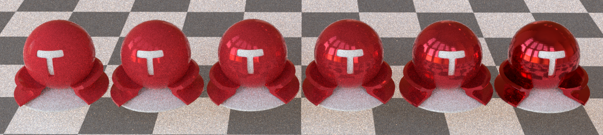 -
subsurface
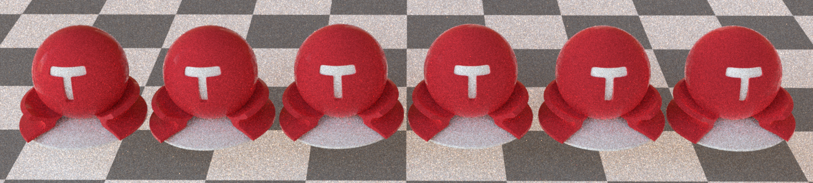 -
specular
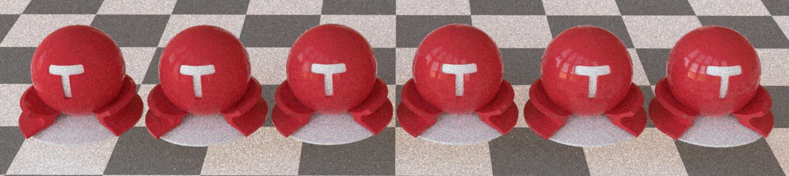 -
speculartint
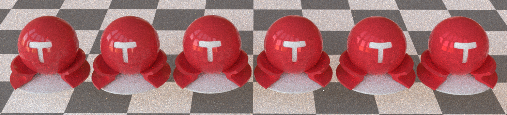 -
roughness
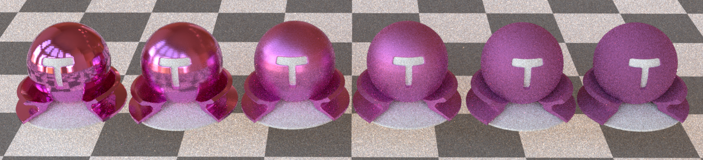 -
sheen
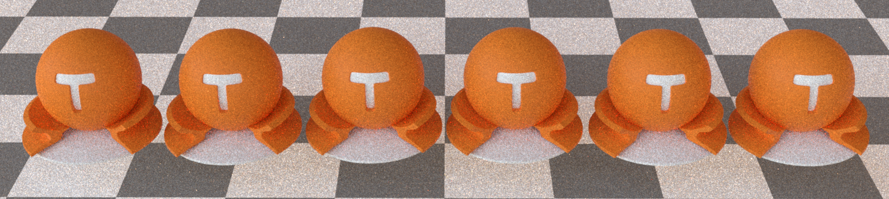 -
sheentint
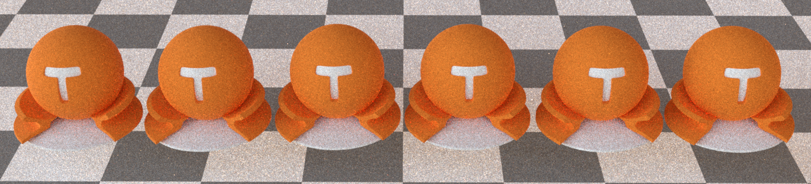 -
clearcoat
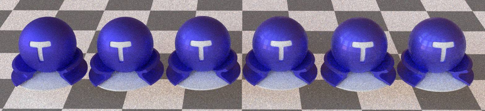 -
clearcoatgloss
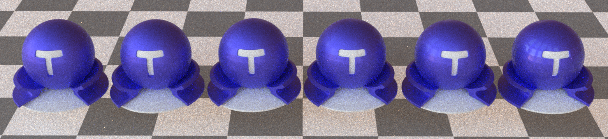 -
Warptest: GTR1 & GTR2
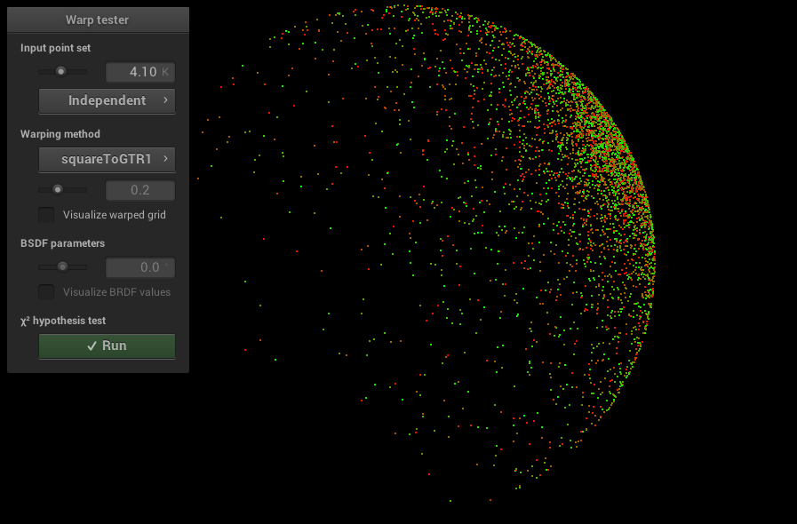 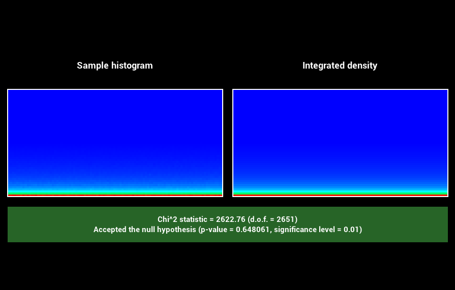
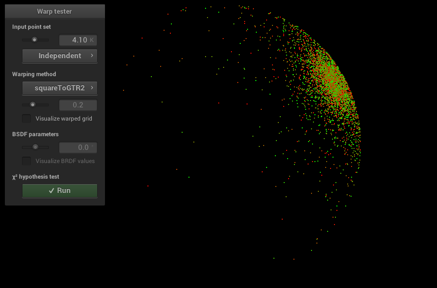 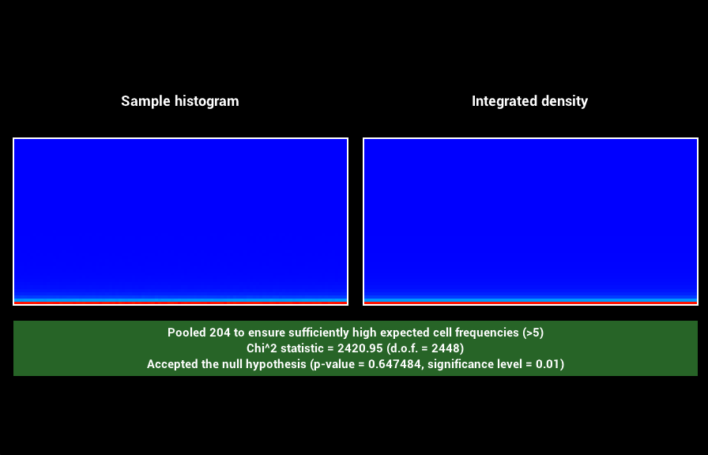
3 Ziyao's Implementation
Feature List:
- Transmittance in Homogeneous Media (Beer’s Law) (5.15)
- Homogeneous Participating Media (with integrator of choice, e.g. Photon Mapping or Path Tracing) (No 15.4)
- Heterogeneous Volumetric Participating Media (No 30.1)
- Anisotropic phase function (No 5.16)
- Emissive participating media (No 10.7)
- Simple Extra Emitters (spotlight) (No 5.10)
- Equiangular sampling (No 10.6)
Homogeneous Participating Media (incl. Beer's law) - 15pts
Modified files:
-
include/shape.h(modified) -
include/object.h(modified) -
include/media.h(new) -
include/mediarecord.h(new) -
src/h_media.cpp(new) -
src/media_path.cpp(new) -
src/shape.cpp(modified) -
src/mediaBSDF.cpp(new)
I implemented a medium-aware path-tracer integrator using the sudo-code on the course slide (page 116), where interactions within the media are divided into either a surface interaction or a media interaction. My media is attached to a shape, which has a BSDF that directs the ray into the media without any change of direction. The media allows user-specified values for each channel of the absorbance (sigma_a) and scattering (sigma_s). For all the validations, isotropic scattering is used.
Validations
Related scenes:
-
validation/cbox_homo_media_000222_mine.xml -
validation/cbox_homo_media_222000_mine.xml -
validation/cbox_homo_media_141414_mine.xml
Homogeneous media with only scattering (sigma_a=<0,0,0>, sigma_s=<2,2,2>)
Homogeneous media with only absorption (sigma_a=<2,2,2>, sigma_s=<0,0,0>)

Homogeneous media with color, absorption, and scattering sigma_a=<1,4,1>, sigma_s=<4,1,4>
Heterogeneous Volumetric Participating Media (incl. homogeneous media) - 30pts
Modified files:
-
include/media.h(modified) -
include/grid.h(new) -
src/h_media.cpp(modified) -
src/media_path.cpp(modified) -
src/shape.cpp(modified)
For heterogeneous participating media, I implemented a grid density media inspired by the pbrt textbook. The grid is implemented as a 3D std::Vector with user-defined dimensions "voxels_yzx", these voxels are stretched along the user-defined boundaries "upperBounds_yzx" and "lowerBounds_yzx" inside the scene. The std::Vector contain Color3f data types, representing the thinness (1/density) of each channel at each grid point. The transmittance and free-path sampling are implemented with ray-marching, where free path sampling implements the method in page 118 of the course slides with a step size of 0.02 and the transmission calculation implemented the equation in page 89 in the same slides with a 0.02 step size. The transmittance, in this case, would be exp(-sigma_t*step_size/grid.get()). The heterogeneous is also used in Boxiang's procedural volume, which could serve as an additional validation.
Validations
Related scenes:
-
validation/compare_to_thinness_1.xml -
validation/thinness_1.xmlnote: important instructions on line 58. -
validation/cbox_path_media_hetro_decay_orig.xml -
validation/cbox_path_media_hetro_decay.xmlnote: important instructions on line 58. -
validation/rainbow_decay_compare_111000_homo.xml -
validation/rainbow2.xmlnote: important instructions on page 58.
When all grids contain density=1, the media is the same as a homogeneous media
when we set an exponential decay to the density according to the sphere(sigma_a=<1,4,1>, sigma_s=<0,0,0>)'s coordinates' distance towards the right edge, we get
Since my grid entries are Color3f values instead of integers, I could fill in the density separately for each channel. Applying an exponential function to different channels according to the distance towards the center for each dimension would yield:
Anisotropic phase function - 5pts
Modified files:
-
src/h_media.cpp(modified) -
src/warptest.cpp(modified) -
src/warp.cpp(modified) -
include/warp.h(modified)
Validations
Related scenes:
-
validation/PF_1_131313.xml -
validation/PF_baseline_131313.xml
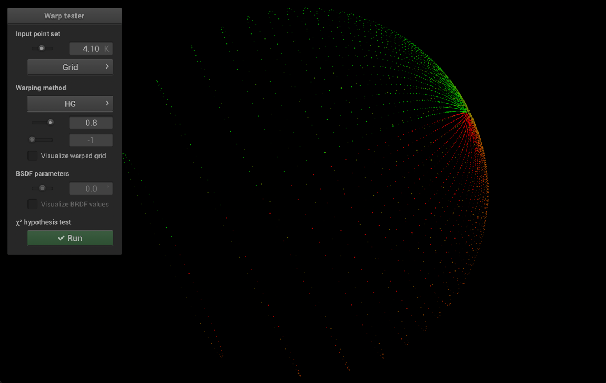 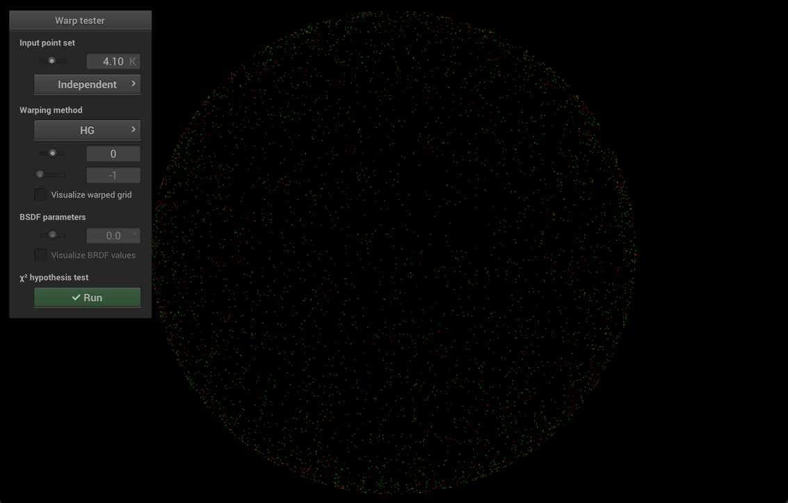 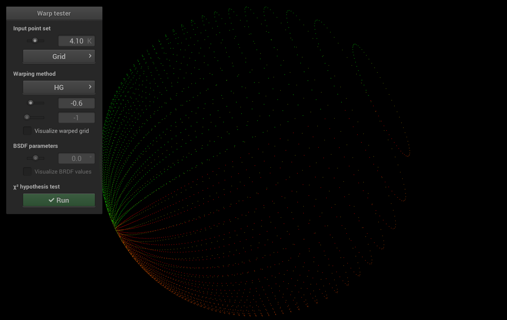
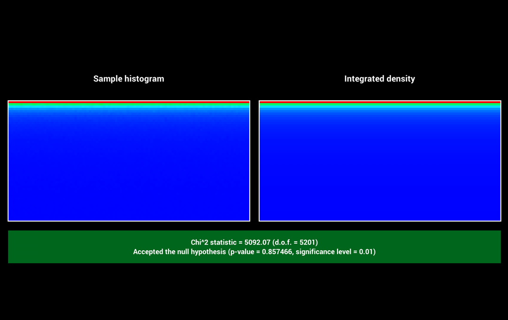 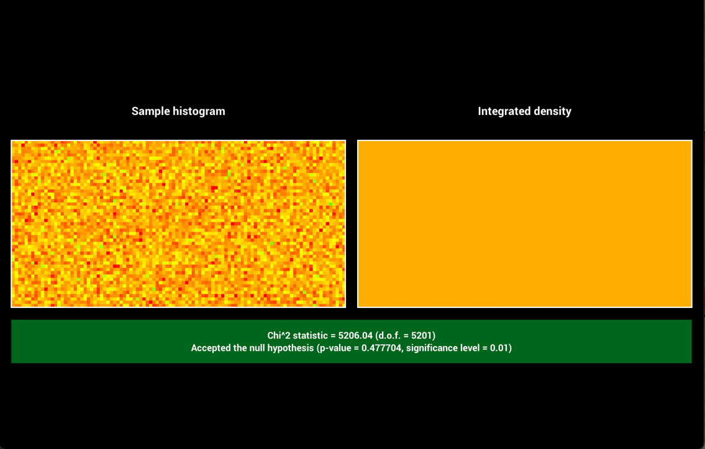 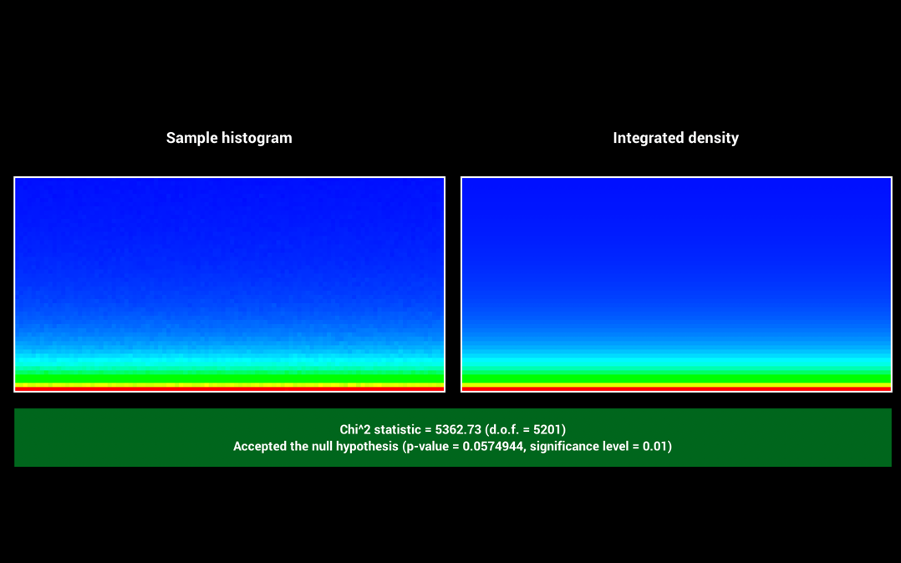
Comparing a homogenuous media (sigma_a=<1,3,1>, sigma_s=<3,1 3>) with/without Anisotropic scattering (g=0.9)
Emissive participating media - 10pts
Modified files:
-
include/media.h(modified) -
include/scene.h(modified) -
src/scene.cpp(modified) -
src/h_media.cpp(modified) -
src/media_emissive.cpp(new)
I implemented the emissive participating media following the
technical memo from Pixar. MIS sampling is used
and the emitter is sampled both outside the media and side the media. Specifically, the equation for ems sampling is
on the left and the equation for brdf sampling is on the right.
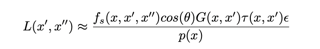
Here, f() is the bsdf, G() is the visibility divided by the distance between the two points.
p() is the possibility of the value inserted being sampled. tao() is the transmittance. Epsilon
is the volumetric emission. vis() is the geometric visibility.
Validations
Related scenes:
-
validation/rainbow_decay_compare_111000_homo.xml -
validation/emissive_light_on_111000_10,50.xmlnote: important instructions on line 58. -
validation/emissive_light_off_111111_00,51.xmlnote: important instructions on line 58. -
validation/emissive_light_on_111111_00,51.xmlnote: important instructions on line 59.
Here, we compare the difference between making the same media emissive/non-emissive
Here, we compare the difference between sampling the area emitter + emissive media and sampling only the emissive media (with a solid diffuse ball in the middle)
Spotlight emitter - 5pts
Modified files:
-
src/spotlight.cpp(new)
This implementation is inspired by the spotlight in mitsuba. The emitter is bounded by the following parameters: position, intensity, direction: the direction of the center of the cone of the emitted light, total width, the maximum angle between the beam edge and the center of the beam, and fall off start, the maximum angle against the beam center before the light starts to fade.
Validations
Related scenes:
-
validation/spot.xmlnote: important instructions on line 58.
Here, with a total width of 20 degrees, let's see the differences of fallout values of 0, 10, and 20 degrees.
Equiangular sampling - 10pts
Modified files:
-
src/media_equiangular.cpp(new)
Equiangular sampling is implemented according to the paper provided in the feature list. I implemented the geometries in the picture and made use of this sampling technique while the ray is inside the media. Using step=0.005, I looked for the best values of a and b--the integration bounds.
{kind=link}
Validations
Related scenes:
-
validation/equi.xmlnote: important instructions on line 6.
Here, I placed a point light source inside a spherical medium and recorded the different effects of a and b using a step_size of 0.005.
4 Final scene

The majority of our scene are covered with clouds. To model the thickness of clouds and randomly distributed surface, we first use Homogeneous volume to model the cloud base. Then, we apply perlin noise to the cloud crust, which generates a heterogeneous cloud debris.
We use four light sources in total: one environment map to simulate the galaxy; one area light to model the shiny "goddess" planet; and two directional light put in both front and back to maintain the scene in good lighting condition. The boat, whales and snow mountains leverage texture mapping and disney BSDF. Since this scene is pretty time comsuming to render, we only set spp as 16 to get this result.